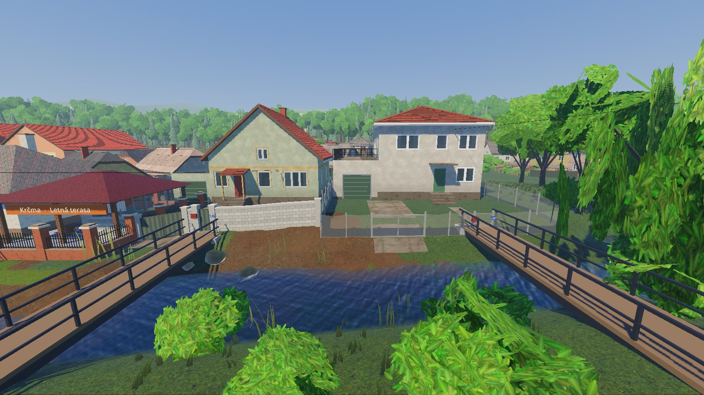
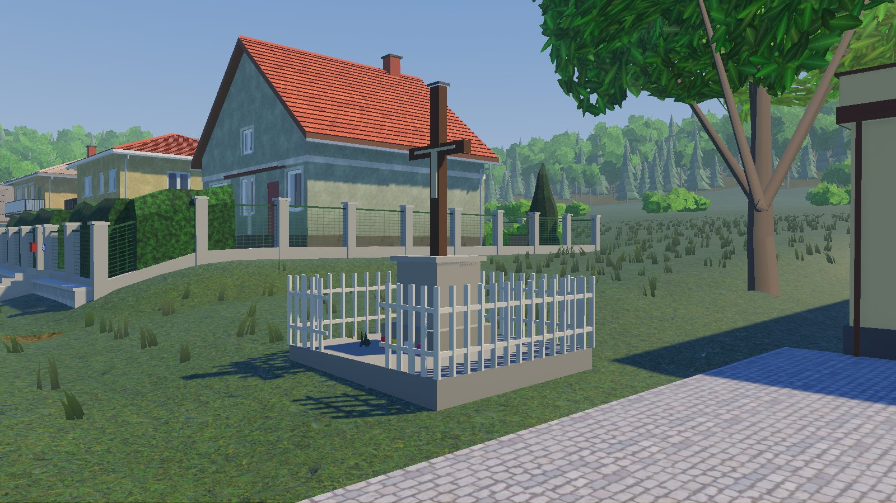
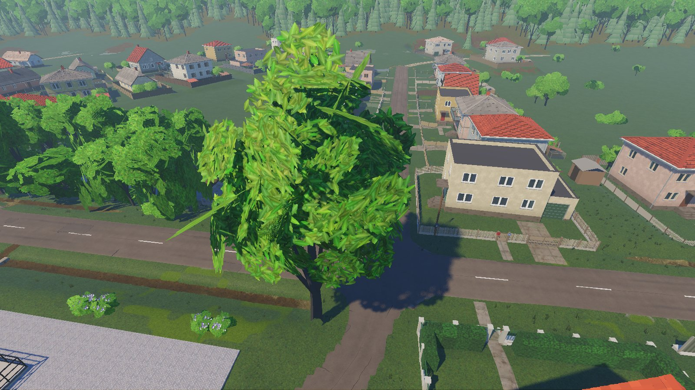
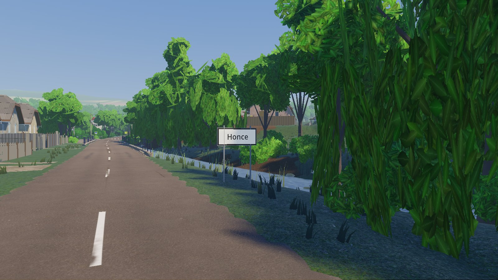
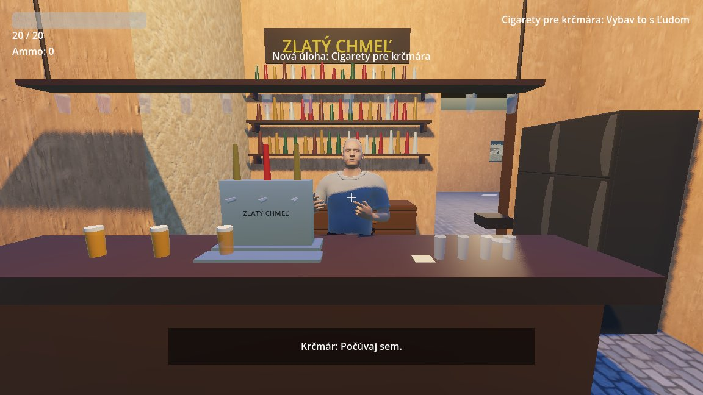
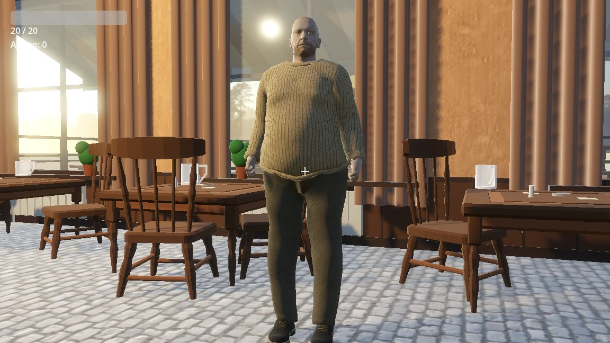
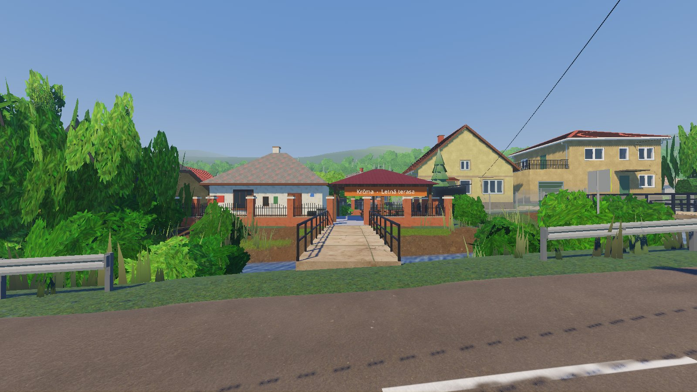
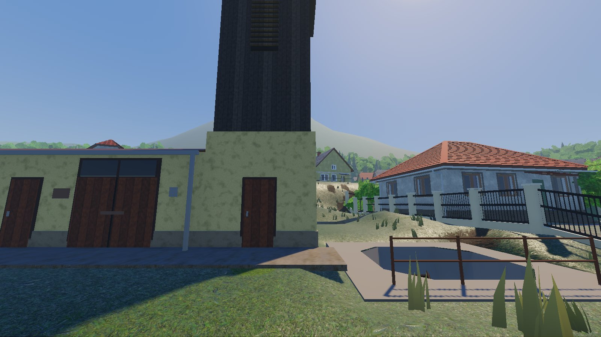

Doteraz som mal dedinu, dom, krčmu, pár ľudí a pár questov, ale nevedel som, kto je hráč a prečo tam vlastne je. Teraz už to viem. Celá hra bude smerovať k jednému večeru v krčme, k vkupovačke.
Until now I had a village, a house, a pub, a few people and a few quests, but I didn't know who the player is or why he's even there. Now I do. The whole game will build up to one evening in the pub: the vkupovačka.
Prečo to stálo
Posledný týždeň som sa skoro celý babral s dedinou: cesty, jarky, ploty, štrk. Tak som si sadol a začal odpovedať na úplne základné otázky. Kto je hráč? Čo robí cez deň? Ako sa hra končí? A pri prvej som sa zasekol.
Why it got stuck
I spent most of last week fiddling with the village: roads, ditches, fences, gravel. So I sat down and started answering the really basic questions. Who is the player? What does he do all day? How does the game end? And I got stuck on the first one.



Čo je vkupovačka
Na výške som písal seminárku o jednom zvyku z Honiec. Volá sa vkupovačka a je to obrad, ktorým starší chlapi z dediny prijmú medzi seba mladých chalanov. Kto nie je vkúpený, nie je ešte celkom „jeden z nich“.
Ide to takto. Nevkúpení chalani celé pripravia: vybavia krčmu, občerstvenie a obídu ľudí. Večer sedia pri svojom stole v kúte a potom idú k starším a v nárečí sa spýtajú:
„Mi bi smo se cheli vkúpit.“ – „Tak dobre, komovcoch máte?“ – „Máme.“ – „Pálenku máte?“ – „Máme.“ – „Ta ich pomo vkúpit.“
Každý musí doniesť liter pálenky a mať komu. Koma je kamarát, ktorý za teba ručí a donesie ďalší pol liter. Ľudia hovoria, že koma je viac ako vlastný brat.
Potom príde búchanie. Chalan sa postaví do stredu krčmy, chlapi okolo neho ho chytia za opasok, vrecká alebo pútka a dohadujú sa: „Ta kelo mu dáme?“ – „Aspoň sedem.“ – „Kdeže sedem, dvanásť mu dajte!“ Potom ho dvíhajú a prudko sťahujú na zem. Koma ho pri tom celou silou drží dole. Keď je po všetkom, nový vkúpený dolieva starším pálenku, nosí im jedlo a oni si sadnú ku kartám.
What vkupovačka is
At university I wrote a seminar paper on a custom from Honce. It's called vkupovačka (roughly "buying in"), and it's the ritual where the older men of the village take the young lads in among them. Until you've been bought in, you're not quite "one of them".
It goes like this. The lads who aren't in yet set everything up: they sort out the pub, the food, and go round inviting people. In the evening they sit at their own table in the corner, then go over to the older men and ask, in dialect:
"We'd like to buy in." – "All right, got your komas?" – "We have." – "Got the pálenka?" – "We have." – "Then let's buy them in."
Everyone has to bring a litre of pálenka (fruit brandy) and have a koma. A koma is a friend who vouches for you and brings another half litre. People say a koma is more than your own brother.
Then comes the búchanie. The lad stands in the middle of the pub, the men around him grab his belt, pockets or belt loops and haggle: "So how many do we give him?" – "Seven at least." – "Seven? Give him twelve!" Then they lift him up and slam him down to the floor. His koma meanwhile holds him down with all his strength. Once it's over, the newly bought-in lad pours pálenka for the older men, brings them food, and they sit down to cards.
Premisa
Hráč je človek zvonka, napríklad výskumník, ktorý o vkupovačke počul a prišiel ju do Honiec vidieť na vlastné oči. Vystúpi z autobusu a má jednoduchý plán: kúpiť si v bufete cigarety a večer ísť na pivo. Lenže v bufete sa deň začne komplikovať.
Postupne zistí, že keď chce vkupovačku naozaj pochopiť, nestačí sa pozerať. Musí sa vkúpiť sám. A na to treba:
- liter pálenky,
- komu, čiže kamaráta z dediny, ktorý za teba ručí a pri búchaní ťa bude brániť,
- kožený opasok a poriadne nohavice, lebo za ne ťa budú dvíhať a lacný opasok to nevydrží,
- zariadiť celú akciu: krčmu, občerstvenie a pozvať ľudí.
Do vkupovačky je pár dní. Cez ne pomáhaš ľuďom, zháňaš veci, spoznávaš štamgastov, občas sa aj pobiješ a hlavne si zháňaš kamarátov. Z nich si nakoniec vyberieš komu. Čím lepšie si sa pripravil, tým lepšie dopadne finále. Je to príbeh o cudzincovi, ktorý prišiel zvyk pozorovať a skončí tak, že ho dedina prijme medzi svojich.
The premise
The player is an outsider, say a researcher who heard about vkupovačka and came to Honce to see it for himself. He gets off the bus with a simple plan: buy cigarettes at the snack bar and go for a beer in the evening. But at the snack bar the day starts getting complicated.
Bit by bit he realises that if he really wants to understand vkupovačka, watching isn't enough. He has to buy in himself. And for that he needs:
- a litre of pálenka,
- a koma, a friend from the village who vouches for you and defends you during the búchanie,
- a leather belt and decent trousers, because that's what they lift you by, and a cheap belt won't hold,
- to organise the whole thing: the pub, the food, and inviting people.
There are a few days until the vkupovačka. You help people, hunt for stuff, get to know the regulars, get into the odd fight, and above all you make friends. One of them ends up as your koma. The better you've prepared, the better the finale goes. It's a story about an outsider who came to watch a custom and ends up being taken in by the village.


Čo to mení
- Questy majú zmysel. Doteraz to boli samostatné úlohy, napríklad cigarety pre krčmára alebo okuliare pre Joža. Teraz každá niekam vedie: ku kamarátovi, k pálenke alebo k opasku.
- Deň má tvar. Každý deň bude mať pár pevných častí (ráno, obed, večer) a do ďalšej sa posunie, keď sa niečo stane. Žiadne hodiny, ktoré bežia.
- Krčma je stred hry. Tam to končí, takže musí byť najlepšie spravená.
- Dedinu prestávam piplať. Opravovať budem už len to, čo vadí pri hraní. Ďalší krok je prvý deň od autobusu po večer.
What it changes
- Quests have a point. Until now they were standalone tasks, like cigarettes for the pub keeper or glasses for Jožo. Now each one leads somewhere: to a friend, to the pálenka, or to the belt.
- The day has a shape. Each day gets a few fixed parts (morning, noon, evening) and moves on to the next when something happens. No ticking clock.
- The pub is the heart of the game. That's where it ends, so it has to be the best-made place.
- I'm done polishing the village. From now on I only fix what gets in the way of playing. The next step is the first day, from the bus to the evening.




Čo ešte neviem
Ako sa hráč volá, koľko dní bude hra mať, či môže vkupovačka aj zlyhať a či bude búchanie minihra, alebo scéna, ktorá dopadne podľa toho, ako si sa pripravil. To príde postupne.
What I don't know yet
What the player is called, how many days the game will have, whether the vkupovačka can fail, and whether the búchanie will be a minigame or a scene that plays out depending on how well you prepared. That'll come in time.